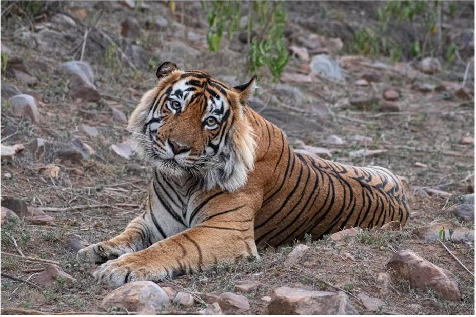
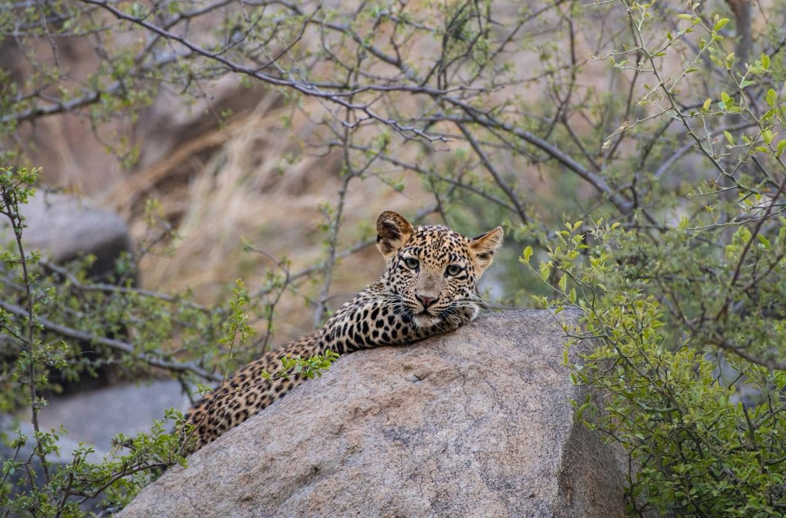
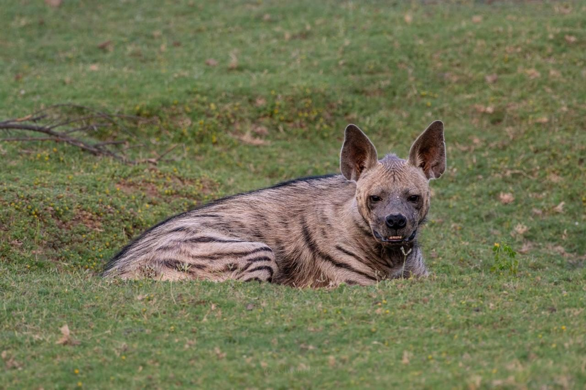
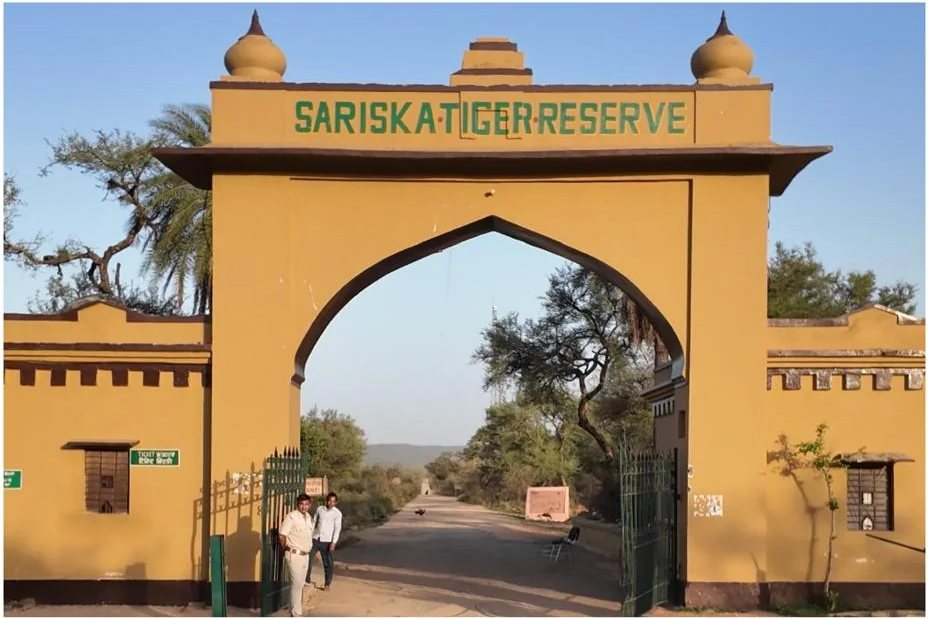

Sariska Tiger Trail
Sariska, Alwar
₹13,999for two guests
Home / Rajasthan Wildlife Tours / Sariska
Sariska, AlwarTigers, leopards and striped hyenas in the Aravalli hills of Alwar.
Plan your Sariska safari
Sariska Tiger Reserve is in Alwar district, Rajasthan, set among the dry forests and rocky ridges of the Aravalli hills. After the reserve lost its tigers, they were brought back from Ranthambore from 2008, and Sariska is now tiger country again.
Tigers share these hills with leopards and striped hyenas, so every drive is a chance to see something different. Ashwin helps you read the signs, from pugmarks to alarm calls, and understand what you are seeing.



Sariska, Alwar
₹13,999for two guests
Ashwin guides every trip. Tell him your dates, group size and what you hope to see, and he will plan it with you.
Where Jawai is, how to reach it, the best time to visit, what to pack and what to expect. Written for international travellers.
Wildlife, safari and stay — based in India, travelling across the wilderness world.